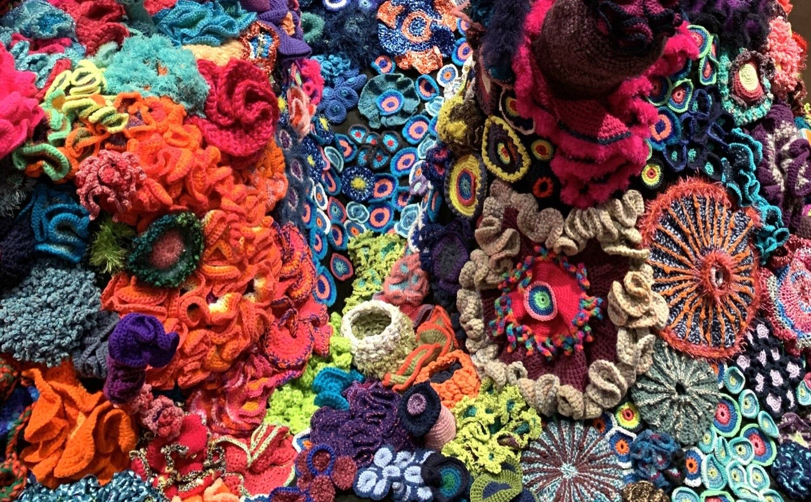
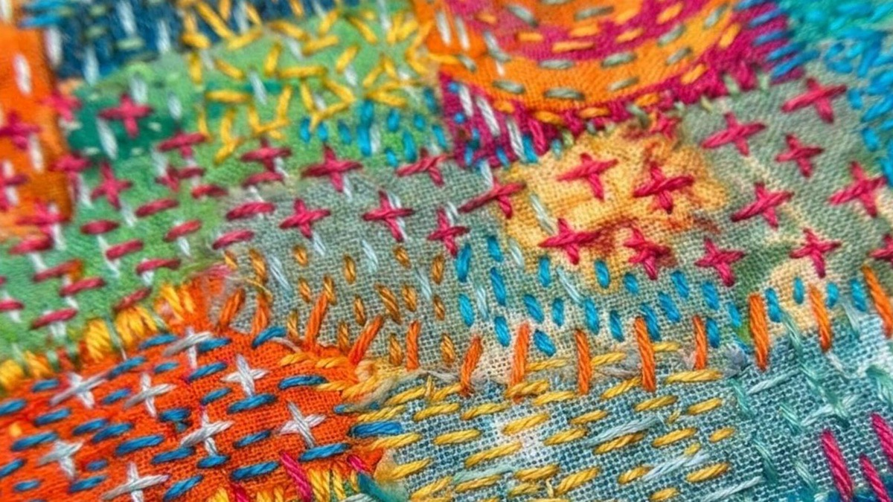
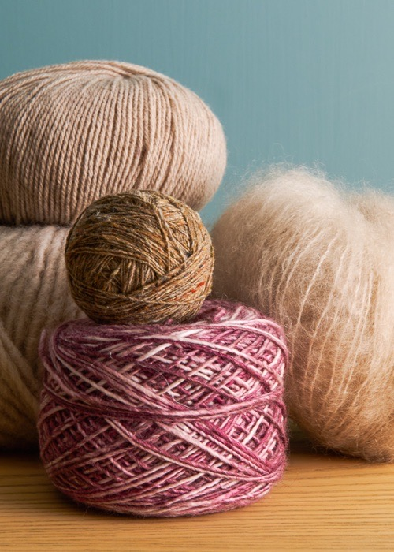
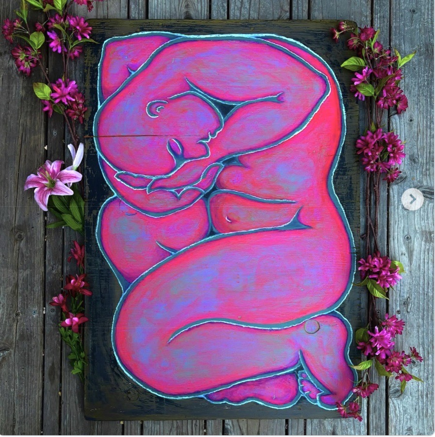
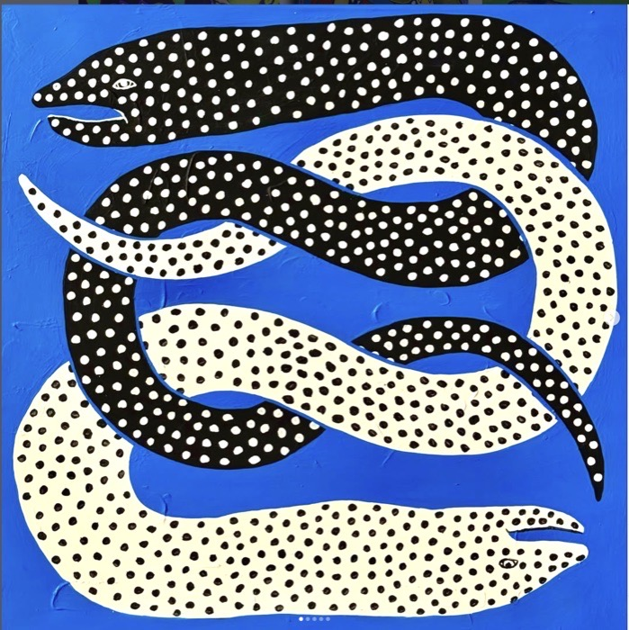

ABOUT
The Newton Arts & Fiber walk will be a temporary public art installation along the Marty Sender Greenway and Auburndale Cove path along the Charles River. The theme, "Bridges," celebrates the power of community, connection, creativity, as well as the historical waterways of our city.
This project aims to make art accessible to the general public, engage the community in both visual and hands-on activities, promote local artists, and highlight the beauty and utility of one of Newton’s most valued public spaces.




